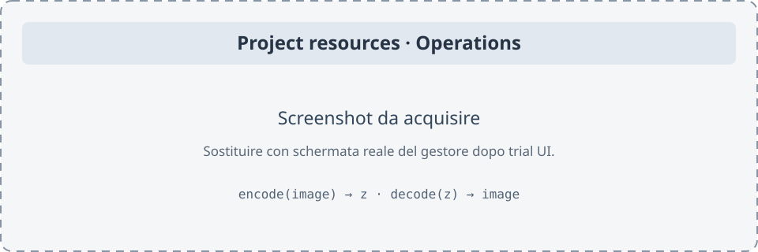
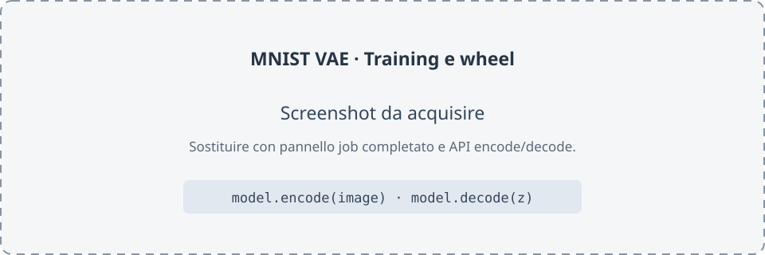

Tutorial: create operations for a VAE
The tiny LLM tutorial shows how to train a language model and call infer. This walkthrough starts from the shipped MNIST VAE and adds two methods to its Python wheel: encode maps an image to its latent representation; decode maps a latent tensor to a reconstructed image. Configure both operations in the UI; no graph edits or project-owned Python operator code are needed.
1. Prepare the client and backend
From the repository root, with CMake, Qt 6, just, uv and a Docker-compatible runtime available:
just build
just backend-sync
just backend-image
just backend-run
Leave the backend terminal open. In a second terminal, start ./build/qt/nnmodelling-ui. The default backend uses http://127.0.0.1:8765; see the server guide for tokens and other options.
2. Open a copy of the VAE
From the repository root, copy the entire project, including its dataset and Python packages:
cp -a examples/models/mnist-vae my-vae
Open my-vae with File > Open project…. Use a copy because this tutorial removes and recreates the operations already included in the example. The root graph sends an MNIST image through sample, the 32-value latent vector, then into the decoder, which produces 784 pixels. The dataset adapter converts images into normalized tensors and reconstructions into [28,28] NumPy arrays.
3. Open the manager and create encode
Choose Model > Manage operations…. The example already lists encode and decode; in the copy, select each row and press Remove, then press Save to start with an empty list.

Click the image to inspect it at its original size.
Press New…. In the Operation form, set:
| Field | Value |
|---|---|
Method name |
encode |
Input endpoint |
node image, handle out |
Input codec |
dataset |
Output endpoint |
node sample, handle out |
Output codec |
tensor |
Press Save in the form. The dataset codec passes the value given to model.encode(...) to the adapter's tokenize method, which accepts a PNG path, PIL image or NumPy array. The graph returns the latent tensor [B,32]. In evaluation mode, the VAE uses the posterior mean, so encode is deterministic.
4. Create decode and save the operations
In the manager, press New… again and set:
| Field | Value |
|---|---|
Method name |
decode |
Input endpoint |
node decoder, handle in |
Input codec |
tensor |
Output endpoint |
node decoder, handle out |
Output codec |
dataset |
The decoder.in endpoint receives the tensor passed to the method. For this operation, the runtime replaces the incoming connection's value; the saved model graph stays intact. The dataset codec passes output [B,784] to the adapter's untokenize method, which returns one [28,28] NumPy image with pixels normalized between 0 and 1.
In the list, check that both statuses say Ready, then press Save. If you see Stale endpoint, edit the operation to select a current node and handle, or remove it. Also save the project with File > Save.
5. Train and download the wheel
Open Training and press Connect / check health. Use these settings for the small included dataset:
| Field | Value |
|---|---|
Epochs |
1 |
Batch |
32 |
Learning rate |
0.001 |
Seed |
0 |
Publish every N steps |
10 |
Press Save project and submit. When the job reaches completed, select it in history and download Download wheel. The operations are stored in the project manifest, and the wheel exports Model.encode and Model.decode alongside Model.infer.

Click the image to inspect it at its original size.
6. Encode, reconstruct and sample
Install the wheel in an isolated Python environment. Replace the path with the downloaded file:
python3 -m venv .venv
.venv/bin/python -m pip install /path/nnm_mnist_vae-0.1.0-py3-none-any.whl
The Python module includes the job ID. Print its name from the wheel without importing its code:
python3 - /path/nnm_mnist_vae-0.1.0-py3-none-any.whl <<'PY'
import sys
import zipfile
with zipfile.ZipFile(sys.argv[1]) as wheel:
for name in wheel.namelist():
if name.startswith("nnmodel_") and name.count("/") == 1 and name.endswith("/__init__.py"):
print("Module to import:", name.split("/")[0])
PY
In the snippet below, replace nnmodel_your_job_id with the printed module. encode accepts the image path directly; decode returns a NumPy array. A torch.randn(1,32) sample explores the standard-normal prior:
import numpy as np
import torch
from PIL import Image
from nnmodel_your_job_id import Model # Replace with the module from your wheel.
model = Model()
z = model.encode("digit.png") # torch.Tensor [1, 32]
reconstruction = model.decode(z) # np.ndarray [28, 28], values [0, 1]
pixels = (np.clip(reconstruction, 0, 1) * 255).astype(np.uint8)
Image.fromarray(pixels).save("reconstruction.png")
sample = model.decode(torch.randn(1, 32)) # A new image from the prior.
Use model.decode(z) to reconstruct the encoded image; model.decode(torch.randn(1,32)) starts from a random point in latent space. Both use the trained wheel weights. The original model.infer(...) method remains available.